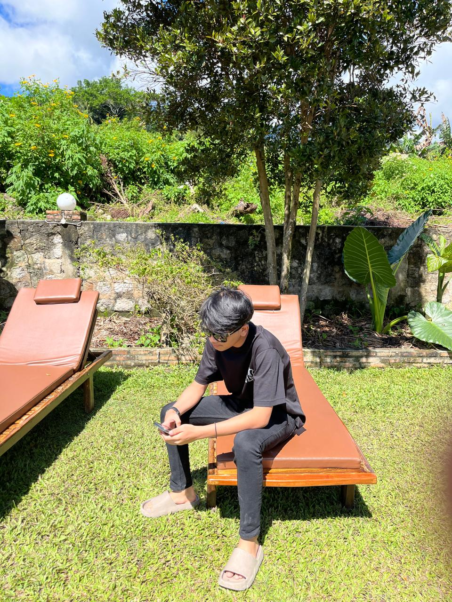

Profil
Muhammad Ragil Azra Lubis
S1 Teknik Informatika
Hallo, saya Ragil lulusan S1 Teknik Informatika dari Universitas Institut Teknologi PLN. Saya memiliki pengalaman sebagai KOL Spesialist, dan terakhir saya memiliki pengalaman sebagai pelayan restaurant. Saya merupakan kandidat yang tergolong semangat dan bertanggung jawab dalam bekerja, selain itu saya juga merupakan kandidat yang aktif, energik, mudah beradaptasi, dan mampu bekerja dalam sistem target.
Pengalaman Kerja
Waiters
2020 - 2023
Resto Ikan Bakar Sedap Selera Rakyat
- Menyambut Penonton Yang Datang
- Menyajikan buku menu dan memeberikan informasi yang rinci terkait ingredients dan rekomendasi menu
- Menyiapkan meja dan peralatan makan
- Melakukan up-sell produk tambahan bila diperlukan
- Menerima pesanan makanan dengan tepat dan akurat
- Mengomunikasikan detail pesanan kepada kitchen crew
KOL
2019 - 2020
Media Iklan Indonesia
- Mengelola komunikasi dan bangun hubungan yang baik dengan media, KOL, dan agensi pihak ketiga untuk kolaborasi bersama dalam kampanye
- Meneliti dan identifikasi KOL di berbagai platform digital untuk membangun brand experience yang kuat
- Menjangkau dan membangun jaringan KOL untuk berbagai kategori produk di media sosial
- Menerapkan kampanye engagement dengan berkoordinasi bersama KOL terkait persyaratan, timeline, dan hasil kerja mereka
Peserta Public Speaking
2022
PT Media Pelatihan Karirmu Indonesia
Mengenal teknik perkenalan & cara berbicara agar terlihat lancar